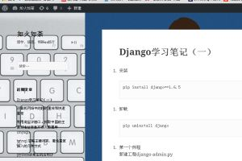
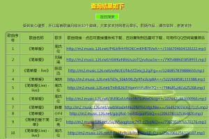
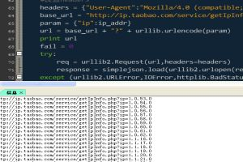
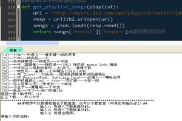
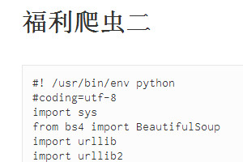
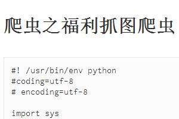
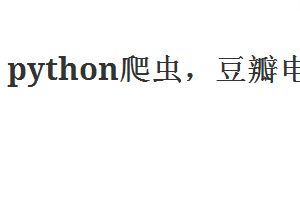
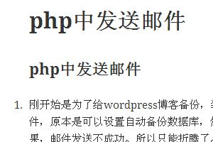
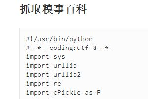
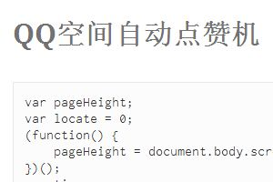

网易云音乐外链
Hello, welcome!
这是一个基于twitter的bootstrap项目建立的页面。
参看更多 »
项目展示
-

个人博客
基于Wordpress和windows IIS服务器搭建的个人博客。里面主要是个人学习总结和一些生活点滴。
浏览
-

个人项目之《网易云音乐外链》
基于网络抓包获取网易云音乐的API，用PHP语言发送请求，并处理返回结果的一个音乐外链获取项目。
浏览
-
个人项目之《音乐FM》
基于网易云音乐外链获取和抓包获取搜索API，CSS和HTML5的一个音乐FM。类似于豆瓣FM。
浏览
-
个人项目之《QQ空间背景音乐》
基于基于腾讯QQ空间背景音乐API，依据QQ号码搜索对方背景音乐的项目。利用CSS3.0和HTML5，jsonp，javascr的ajax跨域和异步处理。
浏览
-

基于淘宝Ip服务接口抓取中国IP信息，并存入数据库
基于淘宝Ip服务接口抓取中国IP地址信息，利用python语言。首先，相关互联网网站上找到中国Ip地址的主要IP段，再进行分析。逐渐缩小范围。x.x.x.(1-254)一定在一个区域
浏览
-

网易云音乐单曲下载和歌单下载程序
基于网络抓包获取网易云音乐的API，用python，跟去歌曲名和歌单名下载歌曲的程序，很遗憾，网易没有专辑的入口，可能是版权问题。
浏览
-

福利爬虫
利用python抓取福利图。可以自己选择开始页和结束页。福利虽好，可不好贪多哦。
浏览
-

爬虫之福利抓图爬虫
可以设置开始页和增量页面的爬虫。还是那句话，福利虽好，可不要贪多哦。
浏览
-

抓取豆瓣电影Top250
抓取Top250电影图片和电影信息，并保存。
浏览
-

基于php和网易邮箱服务器发邮件
利用网易的邮箱服务器，以及php的邮件模块，进行发邮件。按照这个理论，可以写一个邮件机器人。
浏览
-

抓取糗百段子
利用python抓取糗事百科段子，并按一定的格式保存。可以自己选择开始页和结束页。
浏览
-

QQ空间自动点赞机器人
基于js和jQuery的QQ空间自动点赞机。为你的好友点赞吧。不能点太多，否认别人误会你喜欢Ta。
浏览
powered by Jingle.
煎锅作品all rights reserve
成都市电子科技大学
tel：10086